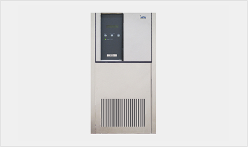
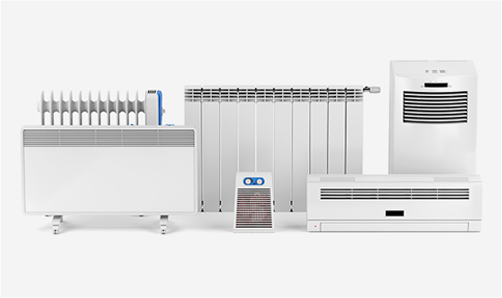
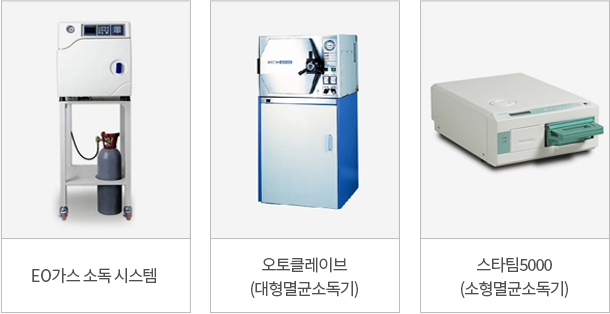
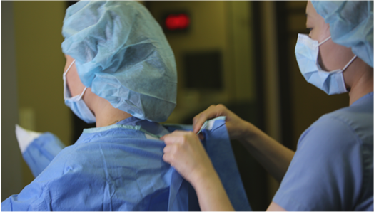

UPS 무정전 전원공급장치
365일 항온항습
완벽한 멸균관리
개인소독 및 복장

UPS 무정전 전원공급장치
정전 등 천재지변의 상황이 발생해도 전원을 안전하게
공급할 수 있는 장치입니다.
공급할 수 있는 장치입니다.

365일 항온항습
수술장비는 습도, 온도 변화에 매우 민감하며 이는 곧
수술 안전문제로 직결됩니다. 에스안과 수술실은 수술에 가장
적합한 온도인 섭씨 20도와 최적습도 40%를 1년 365일
하루 24시간 일정하게 유지합니다.
수술 안전문제로 직결됩니다. 에스안과 수술실은 수술에 가장
적합한 온도인 섭씨 20도와 최적습도 40%를 1년 365일
하루 24시간 일정하게 유지합니다.

완벽한 멸균관리
수술실은 항상 완벽한 멸균관리를 진행하고 청결하게
관리합니다.
관리합니다.

개인 소독 및 복장
수술실 근무 의료진은 개인 소독 및 복장을 완벽히 한
상태에서 근무에 임합니다.
상태에서 근무에 임합니다.